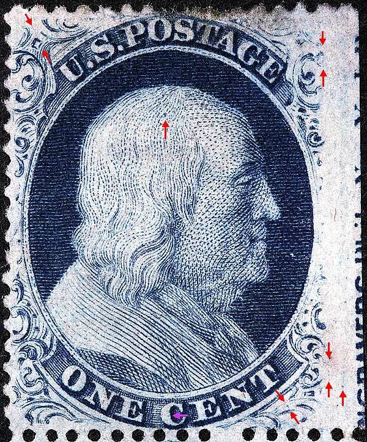
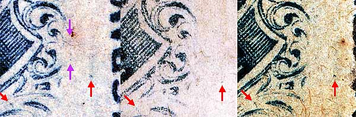
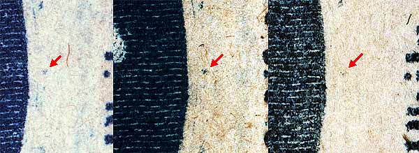
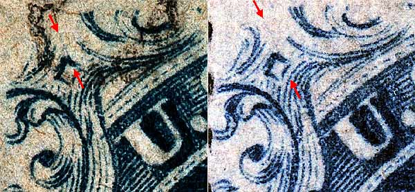
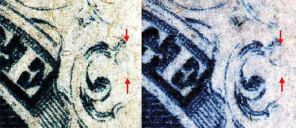

1¢ Franklin Issue of 1857-1861, PLATE 8 Pos 50R8, (Scott #24) |
| Scott #24 Blue, Type V, Relief E Issued only Perforate. Plating Notes: The dot in Franklins head also appears on Position 90R8. |
|  |
| FIGURE 1. (Below) A faint vertical line of color to the right of the Ornament R. (Violet arrows below) There is also a blurry dash of color in the center of the right plume remains which can be seen on all 3 images. These marks have been confirmed as consistant. This mark is not illustrated on the plating diagrams. The red arrows in the right margin indicate a Neinken illustrated plating mark.
 |
| FIGURE 2. (Below) The small dot EAST of Franklins nose as indicated in the Neinken plating diagram is part of the normal stamp design. It stands out on this position because the edge of the stamp is very weak, so the dot is prominent in relation to the wiped-out stamp edge.
 |
| FIGURE 3. (Below) A faint diagonal plate scratch cutting across the remains of Ornament S. This mark has been confirmed as consistant on early or sharp impressions. This mark is not illustrated on the plating diagrams.
 |
| FIGURE 4. (Below) A faint vertical line of color protruding from Ornament M. This mark has been confirmed as consistant on early or sharp impressions. This mark is not illustrated on the plating diagrams.
 |
DISCLAIMER and COPYRIGHT INFORMATION: Thanks for visiting this site. I hope you learn something new as we are making new discoveries all the time. You, the visitor, have my permission to link to my pages and to share the INFORMATION with others. The images themselves fall under the fair use guidelines established by the United States Congress and Copyright law. Basically contact us before using. I also ask in return that you send me an e-mail if I have made a mistake, or have made some other technical blunder that in my rush to put these pages up would cause the visitor confusion. Please also visit my other website at www.slingshotvenus.com. and support the live music arts. While your there, be sure to purchase our music. There are not many philatelic rock stars around and we need all the help we can get. :-) I can be reached at: nerdman@ix.netcom.com Update 12/18/07 |